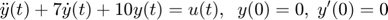

Práctica 6: Sistemas diferenciales y en diferencias
Arellano Sanchez Jose Alberto
Lopez Piedracruz Marcos Antonio
Luviano Murakawa Tsuioshi Alberto
Robles Cernas Carlos de Jesus
Contents
Punto 1
function [ Ft ] = Funciontransfer( a,b ) % a coeficientes de las derivadas de la salida menor a mayor [a_0, ..., a_n] % b coeficientes de las derivadas de la entrada menor a mayor [b_0, ..., b_m] close all tam=size(a); tami=size(b); syms y(t) Y(s) x(t) X(s) Yy fp; syms edd edi edd=0; edi=0; for i=1:tam(2) edd=edd+a(i)*s^(i-1); end for i=1:tami(2) edi=edi+b(i)*s^(i-1); end Ft = edi/edd end
Punto 2
syms t %Funciontransfer( [2,3,1],[3,1]); %R_impulso( [2,3,1],[3,1]); %laplace2015a([2 3 1],[0],[3,1],[0],heaviside(t),10) %R_entrada0([2 3 1],[3 1],[1 2],[0 0]) %R_estado0([2 3 1],[3 1],cos(t)*heaviside(t)) R_total([2 3 1],[3 1],[1 2],[0 0],cos(t)*heaviside(t))
Punto 3
function [ R_0 ] = R_entrada0( a,b,ciy,cix) % a coeficientes de las derivadas de la salida menor a mayor [a_0, ..., a_n] % b coeficientes de las derivadas de la entrada menor a mayor [b_0, ..., b_m] % ciy condiciones iniciales de la salida de menor a mayor [y(0), y(0)^(n-1)] % cix condiciones iniciales de la entrada de menor a meyor [x(0), x^(m-1)(0)] % xi función de entrada en terminos de la variable simbolica t previamente % declarada en el command window % t0 tiempo final para graficar la solucion, la derivada, y la segunda % derivada % ejemplo: resolver y^(3)+y^(2)+2y^(1)+2y=3x^(2)-x^(1)+2x con y^(2)(0)=1 y^(1)=3 % y(0)=2, x(0)=0 x^(1)=1, x(t)=exp(-t)cos(t)u(t), para 10 segundos, se resuleve como % syms t % laplace2016a([2 2 1 1],[2 -1 3],[2 3 1],[0 1],exp(-t)*cos(t)*heaviside(t),10) close all tam=size(a); tami=size(b); syms y(t) Y(s) x(t) X(s) Yy fp; syms edd edi edd=0; edi=0; for i=1:tam(2) edd=edd+a(i)*s^(i-1)*Y(s); for k=1:i-1 edd=edd-a(i)*(s^(i-1-k)*ciy(k)); end end for i=1:tami(2) edi=edi+b(i)*s^(i-1)*X(s); for k=1:i-1 edi=edi-b(i)*(s^(i-1-k)*cix(k)); end end edd; edi; %mensaje('APLICAMOS TRANSFORMADA DE LAPLACE y subtituimos condiciones iniciales') pretty(edd); disp('=') pretty(edi); %mensaje('DESPEJAMOS Y(s)') edd=collect(edd,Y(s)); edd=subs(edd,Y(s),Yy); edi=subs(edi,X(s),0); eq1=edd==edi; disp('Y(s)='); edd=solve(eq1, Yy); pretty(edd); R_0 = ilaplace(edd) title('Respuesta Entrada 0','FontWeight','bold','FontSize',16) ezplot(R_0) xlabel('tiempo','FontWeight','bold','FontSize',16) grid on end
Punto 4
function [ R_Estado_0 ] = R_estado0( a,b,xi ) close all tam=size(a); tami=size(b); syms y(t) Y(s) x(t) X(s) Yy fp; syms edd edi edd=0; edi=0; for i=1:tam(2) edd=edd+a(i)*s^(i-1); end for i=1:tami(2) edi=edi+b(i)*s^(i-1); end Ft = edi/edd; R_imp = Ft*laplace(xi); R_Estado_0 = ilaplace(R_imp) title('Respuesta Estado 0','FontWeight','bold','FontSize',16) ezplot(R_Estado_0) xlabel('tiempo','FontWeight','bold','FontSize',16) grid on end
Punto 5
function [ R_imp ] = R_impulso( a,b ) close all tam=size(a); tami=size(b); syms y(t) Y(s) x(t) X(s) Yy fp; syms edd edi edd=0; edi=0; for i=1:tam(2) edd=edd+a(i)*s^(i-1); end for i=1:tami(2) edi=edi+b(i)*s^(i-1); end Ft = edi/edd; R_imp = ilaplace(Ft) hold on title('Respuesta al impulso','FontWeight','bold','FontSize',16) ezplot(R_imp) xlabel('tiempo','FontWeight','bold','FontSize',16) grid on end
Punto 6
function [ R_T ] = R_total( a,b,ciy,cix,xi ) RE = R_estado0( a,b,xi ); REE = R_entrada0( a,b,ciy,cix); R_T = RE + REE title('Respuesta Total','FontWeight','bold','FontSize',16) ezplot(R_T) xlabel('tiempo','FontWeight','bold','FontSize',16) grid on end
Punto 7
syms t; a=R_impulso([2 2 1],[2 1],[1 1],[0],exp(-t).*heaviside(t)); b=R_entrada0([2 2 1],[0 1]); c=R_estado0([2 2 1],[2 1],exp(-t).*heaviside(t)); d=R_total([2 2 1],[2 1],[0 1],exp(-t).*heaviside(t)); s=tf('s'); g=(2*s^4+12*s^3+21*s^2+21*s+12)/(s^5+3*s^4+6*s^3+8*s^2+8*s+4); t=0:0.01:10; subplot(3,2,1) fplot(a,[0, 5],'b','LineWidth',2); grid on; xlabel('tiempo') title('Respuesta al Impulso') subplot(3,2,2) fplot(b,[0, 5],'r','LineWidth',2); grid on; xlabel('tiempo') title('Respuesta a entrada cero') subplot(3,2,3) fplot(c,[0, 5],'y','LineWidth',2); grid on; xlabel('tiempo') title('Respuesta a estado cero') subplot(3,2,4) fplot(d,[0, 5],'g','LineWidth',2); grid on; xlabel('tiempo') title('Respuesta total') subplot(3,2,[5 6]) step(g,t); grid on; xlabel('tiempo') title('Respuesta al escalon con condiciones iniciales 0')
Punto 8
function [Z1] = problema8(a,b,ciy,cix,xi) close all tam=size(a); tami=size(b); syms y(n) n z Y(z) x(n) X(z) Yy fp; syms edd edi edd=0; edi=0; for i=1:tam(2) yd(i)=y(n+tam(2)-i); edd=edd+ a(i)*ztrans(yd(i)); end for i=1:tami(2) xd(i)=x(n+tami(2)-i); edi=edi+ b(i)*ztrans(xd(i)); end edd=subs(edd,ztrans(y(n),n,z), Y(z)); edi=subs(edi,ztrans(x(n),n,z), X(z)); for j=1:tami(2)-1 edi=subs(edi,x(tami(2)-1-j),cix(j)); end for j=1:tam(2)-1 edd=subs(edd,y(tam(2)-1-j),ciy(j)); end edi=subs(edi,X(z), ztrans(xi)); edd=collect(edd,Y(z)); edd=subs(edd,Y(z),Yy); eq1=edd==edi; edd=solve(eq1, Yy); Y2=partfrac(edd); X2=ztrans(xi); Z1=simplify(Y2/X2); end
Punto 9
function [Z2] = punto9(a,b,ciy,cix,xi) syms Z1 n; Z1=problema8(a,b,ciy,cix,xi); Z2= iztrans(Z1); tiempo=0:1:10; stem(tiempo,subs(Z2,n,tiempo),'b','LineWidth',2) title('Respuesta al Impulso ','FontWeight','bold','FontSize',16) grid on end
Punto 10
function [Respuesta_Entrada0] = R_entrada0Dis(a,ciy) close all tam=size(a); syms y(n) n Y(z) Yy; syms edd; edd=0; for i=1:tam(2) yd(i)=y(n+tam(2)-i); edd=edd+ a(i)*ztrans(yd(i)); end edd=subs(edd,ztrans(y(n),n,z), Y(z)); for j=1:tam(2)-1 edd=subs(edd,y(tam(2)-1-j),ciy(j)); end edd=collect(edd,Y(z)); edd=subs(edd,Y(z),Yy); eq1=edd==0; edd=solve(eq1, Yy); Respuesta_Entrada0=simplify(iztrans(edd)); % figure (1) % hFig = figure(1); % set(hFig, 'Position', [0 0 900 900]) % axes1 = axes('Parent',hFig,'FontWeight','bold','FontSize',16); tiempo=0:1:10; stem(tiempo,subs(Respuesta_Entrada0,n,tiempo),'b','LineWidth',2) xlabel('tiempo') title('Respuesta a entrada cero','FontWeight','bold','FontSize',16) end
Punto 11
function [Respuesta_Estado0] = R_estado0Dis(a,b,xi) close all tam=size(a); tami=size(b); syms y(n) n z Y(z) x(n) X(z) Yy fp; syms edd edi edd=0; edi=0; ciy=[0 0]; cix=[0]; for i=1:tam(2) yd(i)=y(n+tam(2)-i); edd=edd+ a(i)*ztrans(yd(i)); end for i=1:tami(2) xd(i)=x(n+tami(2)-i); edi=edi+ b(i)*ztrans(xd(i)); end edd=subs(edd,ztrans(y(n),n,z), Y(z)); edi=subs(edi,ztrans(x(n),n,z), X(z)); for j=1:tami(2)-1 edi=subs(edi,x(tami(2)-1-j),cix(j)); end for j=1:tam(2)-1 edd=subs(edd,y(tam(2)-1-j),ciy(j)); end edi=subs(edi,X(z), ztrans(xi)); edd=collect(edd,Y(z)); edd=subs(edd,Y(z),Yy); eq1=edd==edi; edd=solve(eq1, Yy); h=partfrac(edd); Respuesta_Estado0=iztrans(h); % figure (1) % hFig = figure(1); % set(hFig, 'Position', [0 0 900 900]) % axes1 = axes('Parent',hFig,'FontWeight','bold','FontSize',16); tiempo=0:1:10; stem(tiempo,subs(Respuesta_Estado0,n,tiempo),'b','LineWidth',2) xlabel('tiempo') title('Respuesta a estado cero') end
Punto 12

Punto 13
clc clear all close all N=[12 22 -31 1]; D=[-12 2 8 2]; [Nz,Dz]=c2dm(N,D,1,'zoh'); y=dstep(Nz,Dz); plot(y,'.') grid on;
Punto 14
syms n; tiempo=0:1:10; a=punto9([6 5 1],[1 1],[2 1],[0.5],heaviside(n)); b=punto10([6 5 1],[2 0]); c=punto11([6 5 1],[1 1],heaviside(n)); d=punto12([6 5 1],[1 1],[2 0],heaviside(n)); N=[12 22 -31 1]; D=[-12 2 8 2]; [Nz,Dz]=c2dm(N,D,1,'zoh'); y=dstep(Nz,Dz); subplot(3,2,1) stem(tiempo,subs(a,n,tiempo),'b','LineWidth',2); grid on; xlabel('tiempo') title('Respuesta al Impulso') subplot(3,2,2) stem(tiempo,subs(b,n,tiempo),'r','LineWidth',2); grid on; xlabel('tiempo') title('Respuesta a entrada cero') subplot(3,2,3) stem(tiempo,subs(c,n,tiempo),'y','LineWidth',2); grid on; xlabel('tiempo') title('Respuesta a estado cero') subplot(3,2,4) stem(tiempo,subs(d,n,tiempo),'g','LineWidth',2); grid on; xlabel('tiempo') title('Respuesta total') subplot(3,2,[5 6]) plot(y,'.'); grid on; xlabel('tiempo') title('Respuesta al escalon con condiciones iniciales 0')